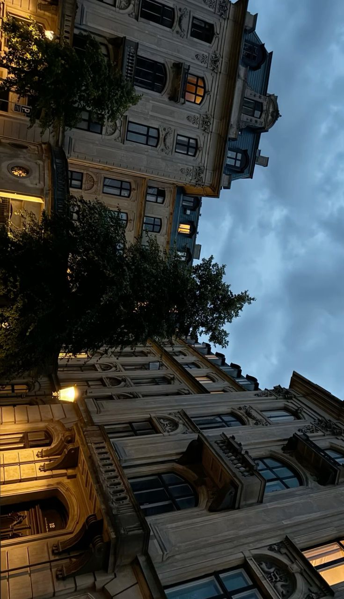
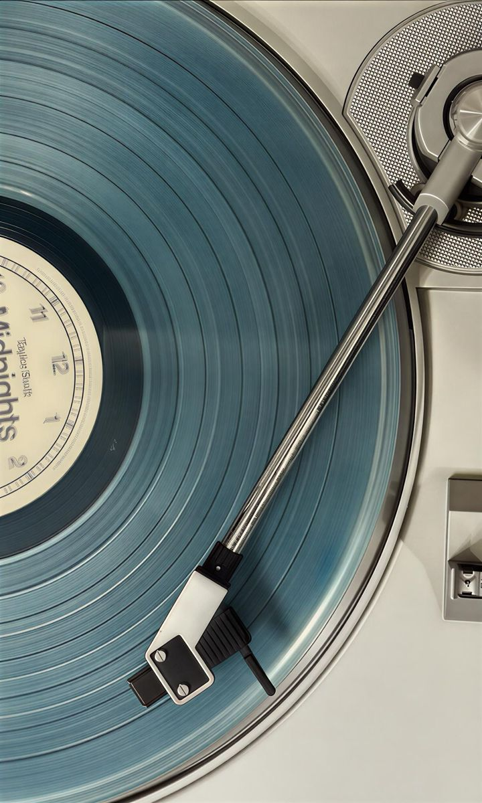

COMING CLEAN
On the merits of owning up.
"A spatial reading experience for the modular mind."
Architect Jo Nagasaka on reviving Japanese bathhouse culture.
For those who think in long-form. FootNote is the sound of deep focus — and the space to actually read.
On the merits of owning up.

Defining the aesthetics of emptiness.
The frequencies of candid conversation.

In conversation with the radical author.
A defense of doing absolutely nothing.
Each piece arrives with a soundscape—considered, not suggested.
Reading becomes spatial, not silent. A second layer of editorial intention.
Explore →We treat audio like light: shaping mood, not filling gaps.